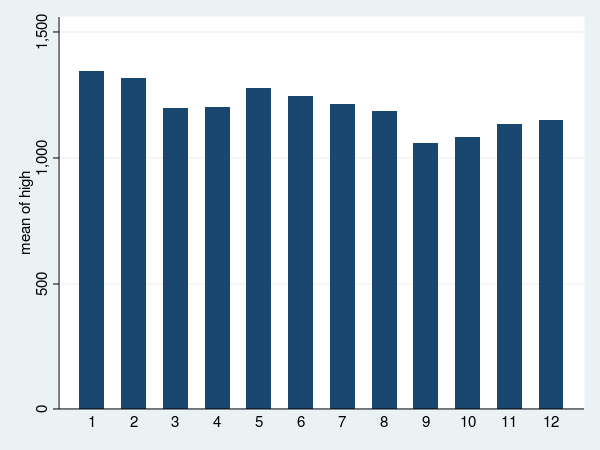
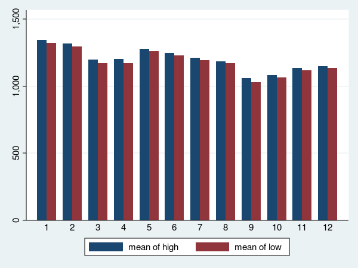

stata 常用的繪圖指令有 histogram 與 graph bar 兩種，
兩者的差別在於 histogram 的橫軸為數值， graph bar 的橫軸為類別。
hist 的使用比較單純，它畫的是某一個變數的值的分佈情況。
譬如 hist var1 會畫出 var1 的分佈情況。
若加上 by(group)，則會將資料依照 group 的值分群，再畫出每一群裡變數的分布情況。
完整的指令為 hist var1, by(group)。
graph bar 的用法有兩種，
第一種是畫出某個變數的統計量。
譬如 graph bar var1 會畫出 var1 的平均值。
graph bar var1 var2 會畫出 var1 var2 兩個變數的平均值。
要注意的是， hist var1 var2 是不合法的指令。因為我們無法畫出兩個變數的分布情況。
graph bar 如果加上 over(category)，則會將資料依照 category 的值分群，
再畫出每一群裡 var1 的平均值。
完整的指令為 graph bar var1, over(category)。
graph bar 的第二種用法是統計某一個變數的每一個值各出現過幾次。
譬如 category 的值為 0, 1, 2，
則 graph bar, over(category) 畫的是 category 等於 0, 1, 2 的次數各是多少。
要注意的是，如果 category 的值為數值，則 graph bar, over(category) 跟 hist category 是一樣的意思。
但如果 category 的值為字串，譬如其值為東西南北，
則 graph bar, over(category) 會畫出東西南北各出現幾次，
hist category 則無法作圖。
. sysuse sp500, clear
. gen trend = "UP" if change > 0 & change != .
. replace trend = "Down" if change < 0 & change != .
. gen month = month(date)
. gen evenmonth = month if mod(month, 2) == 0
. hist volume, by(trend)
. grpah export vol_by_trend.png, replace width(600) height(450)
. hist volume, percent by(trend, note("Note") graphregion(color(white))) color(*1.3) xtitle("xTitle") xlabel(5000(10000)25000, angle(45)) ytitle("yTitle", height(6)) ylabel(0(5)30, angle(45))
. graph export vol_by_trend2.png, replace width(600) height(450)
. graph bar month
. graph export month1.png, replace width(600) height(450)
. graph bar, over(month)
. graph export month2.png, replace width(600) height(450)

. graph bar high, over(month)
. graph export high.png, replace width(600) height(450)

. graph bar high low, over(month)
. graph export high_low.png, replace width(600) height(450)

. graph bar high low, over(month, label(angle(45))) graphregion(color(white))) b1title("barTitle") ytitle("yTitle", height(6)) legend(lab(1 "High") lab(2 "Low"))
. graph export high_low2.png, replace width(600) height(450)

. graph bar high, over(evenmonth)
. graph export evenhigh.png, replace width(600) height(450)